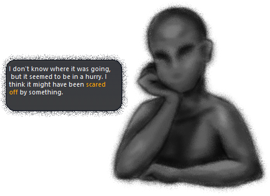
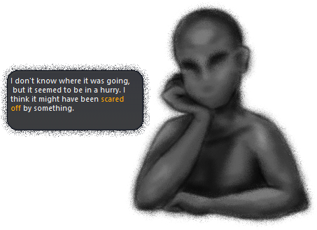

I Often Dream Of Marigolds

I Often Dream Of Marigolds is an otherwordly visitor made for Ghost Masquerade 5. It uses the Fading Like A Dream balloon.
Features
• A peculiar friend
• A dream-like world
• Memories to uncover
• Branching conversations with secrets to discover
• A shell that changes as the story progresses
 

Version History
Official release.
This version is not set up for updates, as per the Ghost Masquerade rules.
User Reviews
"I Often Dream Of Marigolds is an exceptional experience crafted by a master. Detailed choices and a compelling story will keep you hooked as you work to unravel the mystery of who you're talking to, where you are, and why you're there.
I cried over it, and you should too." ~ Zichqec, June 9, 2023